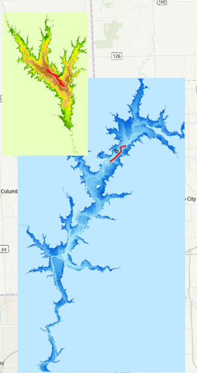
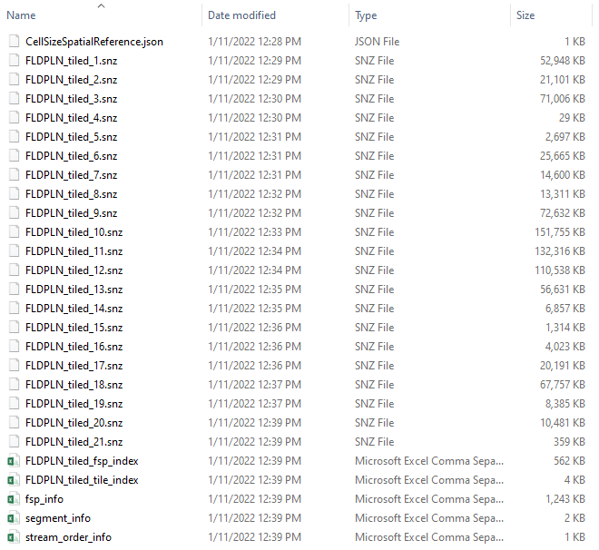
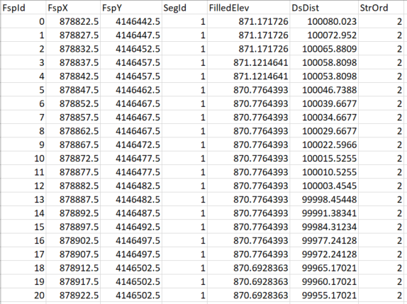
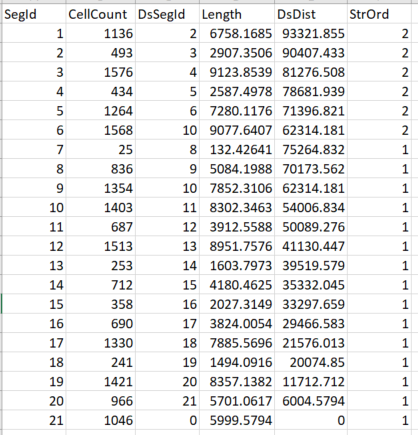
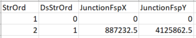
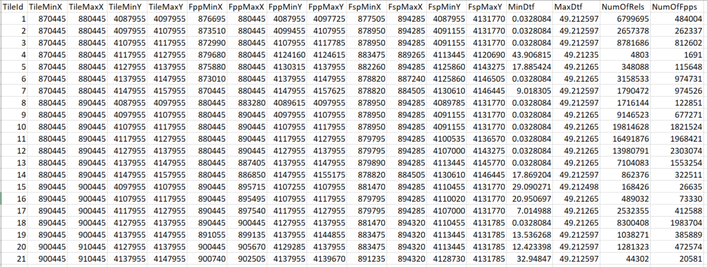
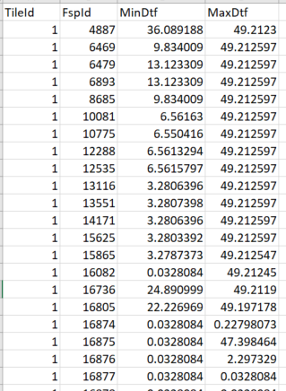
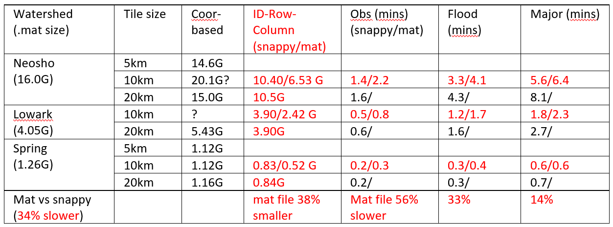

3. Tile FLDPLN Libraries#
The FSP-FPP relations generated by the FLDPLN algorithm/model can be organized/structured in several different ways for flood mapping. Tiling the relations by FPPs can avoid memory overflow and allow parallelization.
3.1. Tiling relations by FSPs#
The FSP-FPP relations from the FLDPLN model are originally organized segment by segment where each segment file stores all the FPPs that can be flooded by the FSPs on a segment. This organization conceptually “tiles” the relations by groups of FSPs (i.e. segments). The figure below shows the 21 segments (left) for the Spring library and the minimum DTF to flood the FPPs for segments 1 and 8 (middle). As shown in the figure, while the length of the segments 1 and 8 are similar, the FPP footprints they can flood are very different.
Note
Is this organization comes out the convenience of the FLDPLN model?

{kind=link}


A FPP might be flooded by the FSPs from several different segments, typically upstream or downstream segments. When mapping the flood depth at a FPP, all the FSPs that might flood the FPP have to be identified from the segment files. As such, FSP-FPP relations from several different segment files (possibly all the segment files) need to be accessed and processed. With this segment-tiled relations, flood depth can be mapped in several ways, though none of them are ideal.
Load all the segments/relations into computer memory and map the depth for the entire library all at once (Jim did exactly this way). This approach, however, will cause memory overflow for large libraries (e.g., lowark) and is not scalable.
Map flood depth segment by segment (i.e., generating segment flood depth maps) and then combine the results to get the final depth (maximum of segment flood depth). This approach may still cause memory overflow when the FPP footprints get too large for some segments. In addition, the final map can only be generated until all the segment maps are finished and the max-operation is applied. This is not good for parallelizing the mapping process.
Map flood depth region/tile by region/tile. In this approach, each region/tile map can be generated independently (i.e., is scalable). But, as a region/tile is typically covered by several segments, mapping each region/tile involves several segment file I/Os. As such, segment file I/Os (especially large segments) can significantly slow down the process, and large segment files may cause memory overflow.
Use fishnet tool to create a grid of tiles.
3.2. Tiling relations by FPPs#
To avoid memory overflow and to allow parallelization (i.e., scalable ), the FSP-FPP relations from the FLDPLN model are re-organized by groups of FPPs (i.e., tiles) instead of segments. The figure below shows the 21 10-by-10km tiles for the Spring library. It is a coincidence that there are also 21 tiles. Note that the actually tile size (i.e., the FPP extent) is different from tile to tile.
By re-organizing the relations into tiles, the mapping process
avoids memory overflow (by using a proper tile size)
reduces file I/Os (only one tile file I/O is needed to map each tile)
is scalable by mapping the tiles in parallel as each tile map is generated independent to each other.
In addition to tiled FSP-FPP relation files (i.e.., .snz files), several other files are also created to either reduce file size or to speed up the mapping process. Below is a snapshot of the files for the tiled Spring library.

The fsp_info.csv file lists all the FSPs within a tile. Each FSP is assigned a unique ID which is then used to represent the FSP in the FSP-FPP relations (instead of its coordinates). It also stores each FSP’s coordinates (in UTM 14N), bed elevation (in feet), original segment ID, and two additional fields (DsDist and StrOrd) that are used to interpolate FSP’s DOF, which will be discussed later.

The segment_info.csv file lists all the segments within a tile. It stores stream network connectivity information in the DsSegId field. Two additional fields (DsDist and StrOrd) are used in interpolating FSP DOF which will be discussed later.

The stream_order_info.csv file stores stream order network connectivity information which is used in interpolating FSP DOF which will be discussed later.

Two index files are created to speed up the mapping process.
The tile-index file (FLDPLN_tiled_tile_index.csv) stores tile extent, FPP extent within the tile, FSP extent within the tile, and the minimum DTF within the tile. When a certain geographical area needs to be mapped, this index (with the FPP extent) helps quickly determine the tiles that need to be mapped. With gauge location, this index (with the FSP extent) also helps quickly determine the FSPs which need to update their DOFs.

tile-fsp index (FLDPLN_tiled_fsp_index) stores the tile-FSP relations (i.e., TileId-FspId) and the minDtf for each FSP. When FSP DOF is updated, this index helps quickly determine and access the tile(s) that need to be mapped.

3.2.1. Tile File Formats#
Several file formats, including mat, parquet, and HDF5, were explored. The experiment results show that Parquet format with snappy compression (i.e., .snz file) is the most efficient.
3.2.1.1. Using .mat format#
Initially, MATLAB’s .mat file format was used to save the FSP-FPP relations in a tile. The main reasons are that 1) the original segment-based relations are in .mat format; 2) ArcGIS Pro’s default python environment has the scipy package (and scipy.io.savemat) installed and no additional python package needs to be installed.
When the number coordinate-based relations in a tile reaches a certain number, scipy.io.savemat()) could not save the relations anymore. For example, when tiling “lowark” watershed with a tile size of 20-km, it crashed on tile #8 with 115,048,288 FSP-FPP relations.

The crash also happened when “neosho” was tiled on tile #84 with a tile size of 10-km.

The crashes were caused by scipy.io.savemat() as somewhere in the method it uses a C Long (4 byte integer) variable to count the number of bytes that needs to be saved in the mat file (see this post). The maximum number of bytes it can count using a C Long type is: 2^31 = 2,147,483,648. This means the total number of FSP-FPP relations in a tile should be less than 90 million (2**31/(6*4)=89,478,485, 6 columns in the relation and each column uses 4 bytes). If the number of relations is greater than this, savemat() will fail until this bug is fixed.
With ID-Row-Column-based relations, there are only 5 columns (FspId, FppRow, FppCol, Dtf, FilledDepth) and the first 3 columns are int32 and the last 2 columns are float32. So the maximum number relations would be: 2**31/(5*4)= 107,374,182 (5 columns in the relation and each column uses 4 bytes)
3.2.1.2. Using Parquet format#
Parquet (pronounced as par-kay) is a file format that is used to store table data in a compressed binary form. Parquet files are usually compressed using either gzip or Snappy compression. In general, gzip is often a good choice for cold data, which is accessed infrequently. Snappy or LZO are a better choice for hot data, which is accessed frequently.
Snappy-compressed file (.snz) size is about 50% more than gzip-compressed file (.gzip) size. But reading and writing Snappy file are faster than .gzip. Change to snappy-based tile files saves about 25% of the mapping time. For the neosho library, mapping time went down from 12-mins to 9-mins.
Parquet vs HDF5: HDF5 file size (with the highest compression level of 9) is still larger and slower than parquet .gzip file. Note that HDF5, like mat file, can save several matrices in one file but a parquet file can only save one table/dataframe!
Mat vs snappy: Mat file size is about 62% of snappy file size. But during mapping, mat-based library by average is 34% slower than snappy-based library. Mat-based library doesn’t need to install the ‘fastparquet” package in ArcGIS python environment, which may be a problem. Mat-based library may not possible with a large tile size (see the bug in scipy.io.savemat())
3.2.2. Coordinate-based vs ID-row-column-based Relations#
In the original FSP-FPP relations, FSPs and FPPs are identified by their coordinates, each is a float64 number. To save space, FSP IDs and FPP’s row & column in a tile are used to identify them. In FSP-FPP relation table, column data types changed from original 6 float64 to {“FspId”:np.int32, “FppCol”:np.int32, “FppRow”:np.int32, “Dtf”:np.float32, “FilledDepth”:np.float32}. This saves file size (in snappy format) about 30%.
The ID-row-column-based relations use less than HALF of the memory than before and there is no memory overflow issue for Neosho watershed (even with 20-km tiles) anymore. It also cuts mapping time more than half because of reduced file reading time and faster dataframe merging using FSP IDs instead of FSP coordinates.
3.2.3. Tile size and mapping Time#
Large tiles reduce file I/O as few files need to be read. But this may increase the merging time as only a small portion of a tile needs to be mapped in a typical case. Based on the experiment results, the tile size of 10-km is overall better than 20-km in file size and mapping time.

3.3. System bottlenecks#
Reading relations from file and merging a large number relations with FSPs with interpolated DOF are the biggest two factors.
Removing the relations whose DTF is greater than or equal to the max interpolated DOF significantly saves memory and time when merging the relations with the DOFs! See the following two lines of code in TileFspFppRelations2Array():
maxDof = fspDof['Dof'].max() tdf = tdf[tdf['Dtf'] < maxDof]
When turning relations to map (2D array), using a for-loop to iterate through the relations seems not an issue, at least compared with the above two factors.
3.4. Issues in tiling the libraries#
There are total of 25 libraries and they are listed below:
[‘bigblue’,’chik_saltfork_medlodg’,’cotneo’,’ksrv’,’litark’,
‘lowark’,’lowrep’,’mdc’,’midkan’,’midsol’,
‘morv’,’nemaha’,’neosho’, ‘ninnescah’,’osagemarmaton’,
‘smoksalsol’,’spring’,’upark’,’upkan’,’uprep’,
‘upsal’,’upsmoky’,’upsol’,’verdigriscaney’,’walnut’]
Some libraries had errors in segment files:
cotneo has issue with its segment file and was fixed by Jude.
minkan has negative flood depth when mapped with a constant DOF of 10 ft. It turned out that some segments (and therefore some tiles) have negative filled depth.
ksrv has negative flood depth when mapped with “Major” flood. It turned out that some segments (1-12 and 17) have zeros for the ‘DTF+fill depth’ column which led to negative filled depth.
One segment in midkan has the same error. This issue was identified by Mike and fixed on 1/8/2021.
morv segment 72 only has one FSP and it is the only upstream segment of segment 73. My script may not handle this situation especially in interpolating FSP DOF. Currently segment 72 is merged with segment 73 and its only FSP is also added as the first FSP in segment 73. Jim also deleted the segment in stream order shapefile but I’m not sure whether the FSP was kept in segment 73! Simply deleting segment 72 and its FSP didn’t work as the FSP inundates many FPPs (see SLIE_segment72.mat and note there is only one FSP in the file)!
3.5. Adaptive tiling#
Based on the FSP-FPP relations, the tiling can be adaptive. A cluster of FPPs which are inundated by the same FSPs can be tiled as a single tile. It’s not necessary that the tiles are rectangles
Tiling based on MinDTF as flood propagate from FSPs
Equal size tiling (i.e., similar tile size) for evenly distributing computation in parallelization?
3.6. Connection to the Map Compute framework#
The FPP-FSP relations from the FLDPLN model represents a certain type of landscape connectivity, i.e., flood hydrological connectivity. They can be viewed as the neighborhoods for either the FPPs or FSPs from the perspective of the Map Compute Framework. The neighborhood of a FPP represents the set of FSPs that may flood the FPP, and the neighborhood of a FSP represents the set of FPPs that the FSP can flood.
As such, flood mapping can be performed in two ways in MC:
FPPs are the mapping/analysis units. For each FPP, a ReduceValue operation (in this case, max(DOF-DTF)) is performed within the FPP’s neighborhood.
FSPs or segments (FSP zones) are the mapping/analysis units. For each FSP or FSP zone, a NbrRelation operation (in this case, max(DOF-DTF)) on their neighborhoods is performed.
3.6.1. Use vs Create neighborhoods in MC#
Can the FSP-FPP relations be computed by MC?
When a neighborhood operation return location (and associated value), the result is a new relation (or neighborhood)
Data and MC operations (egg vs chicken)
Data contains both operations (chicken) and maps (egg)?
When data is collected (or the data collection process) it actually entangled the operations and maps. Is this related with Sinton’s measurement framework and Chrisman’s transformation operations?
3.6.2. Neighborhood as a new data type#
Neighborhoods, i.e., spatial relationships or conductivities, are a new data type in the Map Compute Framework. They have two locations and attributes characterize the relationship. There are several aspects worth of research on neighborhoods.
See Cova and Goodchild IJGIS Extending Geographical Representation to Include Fields of Spatial Objects
3.6.2.1. Neighborhood indexing#
In the case of FPP-FSP relations, the locations are FSP and FPP’s locations and attribute is the DTF. This stored neighborhoods can be indexed by both FPP and FSP.
Indexed-by-FPP (properly), it can deal with extreme large relation and can parallelize the mapping.
Indexed-by-FSP, it can quickly update the relation when FSP status is changed (for example, depth-to-flow at FSPs)
Note that FSPs are already organized/indexed by segments from Jude’s library!
3.6.2.2. Neighborhood pyramid and generalization#
Can we build a pyramid for the FSP-FPP relations (i.e., generalizing the FSP-FPP relations), for example, down scaling the relations by combining 4 or 9 FPPs as one FPP?
3.6.2.3. API for neighborhoods#
Just like geospatial data, domain-based neighborhoods are also as valuable as domain geospatial data and should provide a standard way to access the them. Possible research ideas may include:
A standard web service API for accessing neighborhoods
A STAC extension for accessing neighborhoods
3.6.2.4. Neighborhood couple and de-couple#
At a location, there are multiple neighborhoods. How those neighborhoods are coupled and decoupled? Are those just local operations on the results of focal operations with different neighborhoods?
see Admin Husic’s paper and literature on landscape connectivity under E:\Research\00_Grants\2017_NSF_SpatiotemporalMA\Literature\LandscapeConnectivity
This seems different from the fourth type of operations (i.e., neighborhood relation operation which examines all the neighborhoods at different location) in the Map Compute Framework.